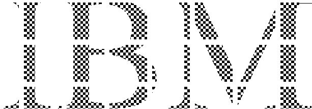

Using paths lets you fill a character string with a complicated or nonrepeating pattern. The following sequence is recommended:
The following figure provides an example of using paths with fill patterns to create characters.
Using Clip Paths to Create Characters